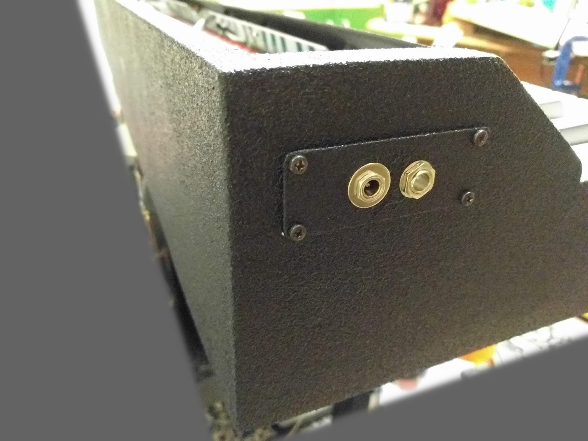
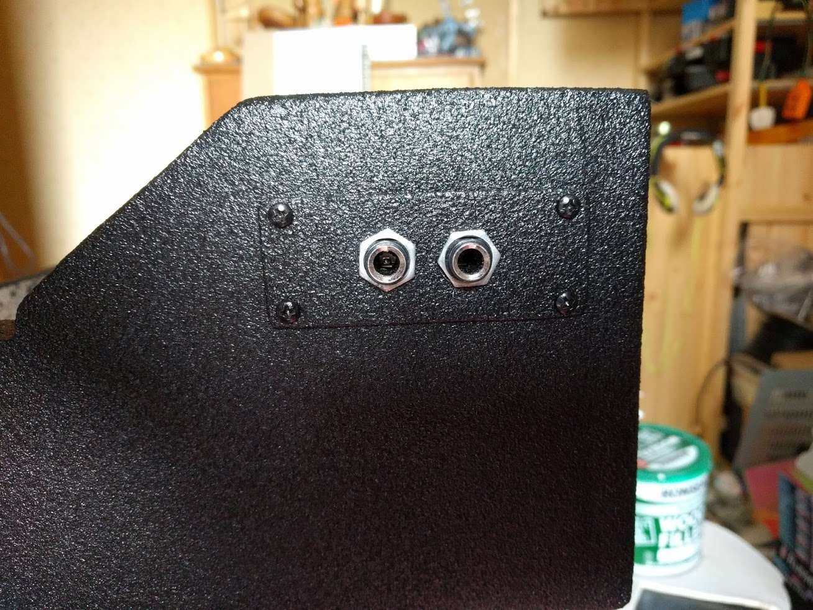

Repair of a Classenti CDP1 digital piano.
When is a power button not a power button? When you forget the punchline.

Acquisition
The piano was discarded by the previous owner after it developed a fault.
The reported issue was that the piano simply wouldn't turn on. This is actually surprisingly accurate, as we will see later.
I certainly wasn't the first person to poke around inside it.
It appears someone took out most of the screws probably tested the fuse and a few voltages.
Luckily, they left the screws and brackets in a resealable bag... it feels like Christmas!
When switched on, the front panel LEDs show no activity (apart from the occasional initial flicker) and no sound is produced.
The product seems to have been previously sold in the UK by UKPianos.
The only manual I could find online was the similar but slightly more advanced Classenti CDP2.
After sending an email to the aforementioned distributor, I got a friendly reply and a copy of the correct manual.
They are occasionally available on eBay, with the most recent prices being in the region of £200 - £300.
I'm lead to believe the original price was double this, but have no source to confirm this rumour.
UKPianos claim that this 88 key weighted key electric/digital piano "will take you up to grade 7".
I'm not sure if grade zero is a recognised level, but it's all I've got.
The only other noteworth information is the 36 cm depth of the body and the 45 kg weight (more on this later).
Reverse Engineering
Firsty, the keyboard chassis and circuit boards were removed from the case to make it easier to work on.
A few cable ties reduce the chances of things moving around and shorting out.
Amplifier and power supply PCB
The input voltage from the (missing) external power supply isn't stated on the piano although it does warn about mains voltage inside...
Rather odd seeing as there's no direct mains input but instead a DC barrel jack. It's safe to assume that the supply voltage will be somewhere between 12 V & 24 V.
Later found out (when I got the correct manual) that 16 V is the correct input.
This board is correctly supplying power to the seperate processor PCB.
Shame. This is a nice simple board to reverse engineer and repair.

This PCB contains the audio, MIDI, power and pedal connectors. Along with the primary power supply and power amplifier.
The power supply appears to be a basic linear regulator with a chunky electrolytic capacitor for the audio amp and built in speakers.
The (highly integrated and self protecting) audio amplifier is a STA540SA.

From the datasheet we can see that the recommended input voltage for driving stereo 8 Ω speakers is 16 V.

Main processor PCB
The second PCB contains the Atmel SAM9753 audio processor, multiple EEPROM ICs
a serially interfaced DAC (AK4384) and I/O interfaces for the peripheral pedals and MIDI devices.

With the correct input voltage, the next step is to check the local regulator.
No problems here, although I did replace the electrolytic capacitors as a precaution.
The below annotated image shows the key areas to focus on.
The orange zone is the keyboard matrix interface. These ribbon cables and IDC connectors lead to the keyboard chassis.
The purple zone is the sub-power supply that generates the 5 V rail for this processor PCB.
The processor features a "RUN" output (pin 118) which would be a good candidate for testing.
The datasheet states that the state of this pin "indicates that the DSP is up and running. Can be used as an external DAC reset".
Or in this case, it can be used to drive a red LED (circled in... yeah... red).
The LED isn't on, but this is hardly surprising seeing as the rest of the system isn't working.
Knowing that the IC is being supplied power but is not running, it is a good idea to check the reset input (pin 83).
Progress! This signal line is at 0 V (low) and the datasheet states that this pin is "active low",
meaning that the IC is kept in a reset (off) state when this pin is at 0 V.

I followed this trace expecting to find an RC network (effectively a pull up resistor and capacitor for stability)
but was greeted with a SOT-23 package (circled in blue) connected between reset, 5 V and GND.
Circled in blue, the device in question is a reset supervisor (or voltage supervisor). The marking AAAA hints towards a MAX809 device.
Repair
Testing in circuit first.
The blue scope trace is the input voltage, which was ramped up slowly using my (adjustable voltage) bench power supply.
The yellow trace is the reset signal... The idea of a voltage supervisor is to only allow a controlled processor to run
when a safe voltage supply is present, and after a specified delay time. This ensures all power supply capacitors are charged and peripherals are operating.

The reset supervisor's SOT-23 package was desoldered and tested out of circuit.
Its behaviour seems to have changed again, but still isn't correct.
I only managed to conduct this test twice before it stopped working entirely (output at 0 V).
Whoops.

A readily available replacement was chosen to be the MAX809SLTRG.
It's an interesting failure mode and I'm not sure if it was caused by manufacturing defect or transcient voltage spike.
There don't seem to be any ESD protection diodes on the power rails, so it's a possibility.

At this point, I took a small risk and connected the SAM9753 reset input to Vcc (bypassing the supervisor).
As long as the processor doesn't write to it's EEPROM as it initially powers on, there is little risk of damage or corruption.
In this state, the piano powered up fully with a success rate of about 30%. This goes to show the the brownout detector and scmitt trigger
on the reset pin of modern microcontrollers should not be taken for granted.
The replacement part datasheet states a trigger threshold of 4.63 V
The replacement was purchased from RS (stock number: 688-8796) for £1.06 in a pack of two. It's like they know I'll break one...
Once the part was installed and the PCB cleaned, the piano begun to consistently power on.
Case Rebuild
Case was damaged and veneer peeled.
Replacement built.




Testing and Conclusion
One year later and it's stil going strong. While I don't have much of a use for it myself, it's certainly a nice feature for guests.
© James Baber 2020.